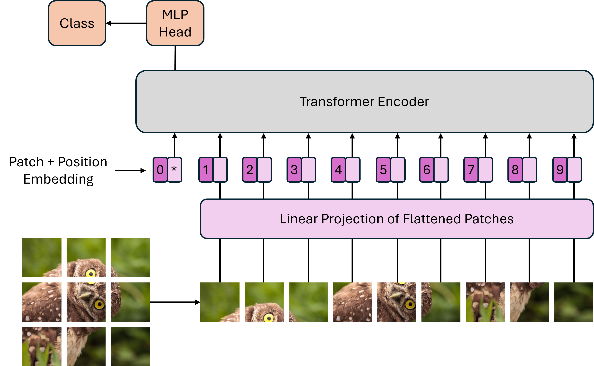
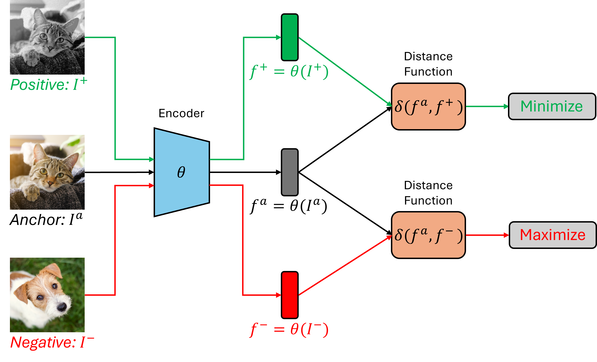
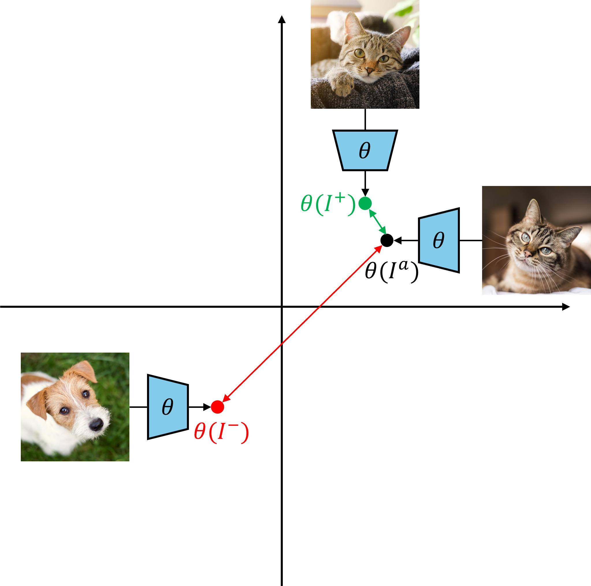
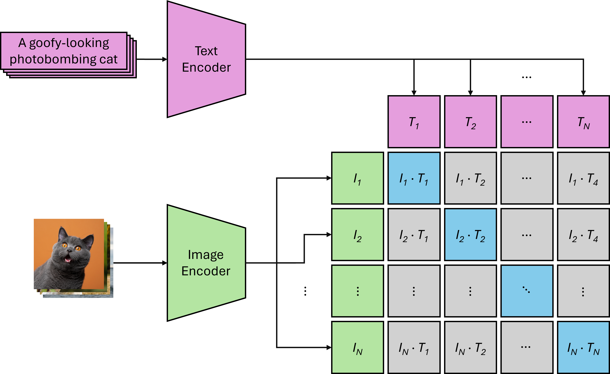
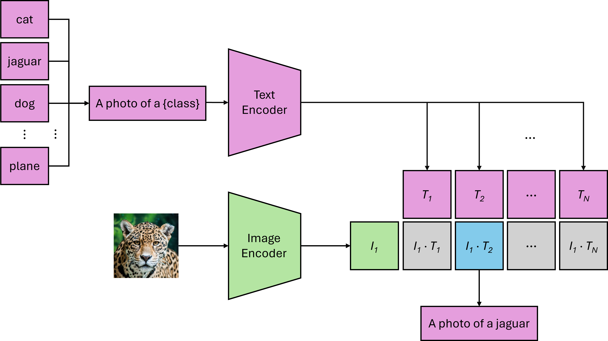
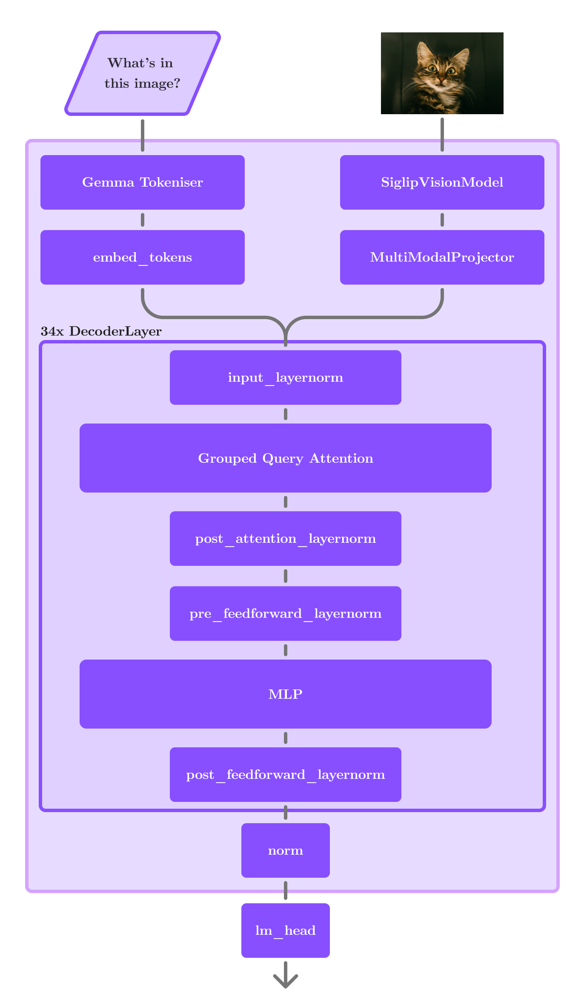

Multimodal Models Day 5
Today’s assignment
Today’s class delves into multimodal architectures, focusing on how models learn the relationships between different types of data, including images and text. More specifically, we will explore CLIP (Contrastive Language-Image Pre-Training) (Radford et al. 2021): a foundational model that learns visual concepts from natural language supervision through a shared embedding space. CLIP’s shared embedding space has heavily influenced modern large-scale multimodal systems, stemming from its initial application to models like DALL-E. As a means of encoding textual prompts and conditioning image synthesis, it enables text-driven image generation and manipulation, while also facilitating the ranking of generative outputs.
On that note, the primary focus of this class is to complete this lab’s notebook (adapted from a HuggingFace PyTorch implementation of CLIP) sustaining the following milestones: (i) understand CLIP’s dual-encoder architecture and contrastive learning, (ii) encode images and captions into the shared embedding space of CLIP, (iii) implement a zero-shot rescoring pipeline by sampling candidate sentences, computing CLIP similarity scores, and selecting the best match, and (iv) visualizing resulting image-text distances of a Gemma Vision-Language Model (VLM) and how cross-modal tokenization and convolution play a role.
By the end of this session, you’ll have hands-on experience with the core mechanics that make CLIP and many other multimodal systems so powerful.
Before Diving into Multimodal Models
Before building our model, it is essential first to understand the core concepts that make multimodal learning possible.
Image Tokenization: From Pixels to Patches
Transformers operate on sequences of inputs. In the case of natural language, as we have seen in the previous day, this involves breaking text into smaller pieces through tokenization. A similar concept is required for images: we partition a grid of pixels into a sequence of patches and feed them into a Vision Transformer (ViT) (Dosovitskiy et al. 2021). This process, visually demonstrated in Figure 1, works through the following sequence of operations:
Patch Extraction and Flatenning: With an input image \(x \in \mathbb{R}^{H \times W \times C}\) (where \(H\) and \(W\) are the height and width of the image in pixels, respectively, and \(C\) is the number of color channels per pixel), split it into a sequence of flattened non-overlapping patches (\(x_p \in \mathbb{R}^{N \times (P^2 \cdot C)}\)), where: \[\begin{aligned} N = \frac{H}{P} \times \frac{W}{P} \end{aligned}\] is the resulting number of patches, each of size \(P \times P\) (e.g., \(16 \times 16\) pixels), and where each flattened patch is a one-dimensional vector \(x_p\), where: \[\begin{aligned} x_p = \bigl[p_{1,1,1},\, p_{1,1,2},\, p_{1,1,3},\, p_{1,2,1},\, p_{1,2,2},\, p_{1,2,3},\,\dots \bigr]^\top \;\in\;\mathbb{R}^{P^2 \cdot C} \end{aligned}\] These are then treated as "tokens", similarly to word tokens of standard transformers;
Linear Projection to Embeddings: Apply a learnable linear layer (\(E \in \mathbb{R}^{(P^2 \cdot C) \times D}\)) to each flattened patch to project each patch into a \(D\)-dimensional embedding space, such that: \[\begin{aligned} \label{eq:linear_projection} x_p^{(i)} = x_p^{(i)}E\quad\in\mathbb{R}^D \end{aligned}\]
Class Token and Positional Embeddings: Prepend a learnable class embedding (\(z_0^0 = x_{class} \in \mathbb{R}^D\)), whose final state (\(z_L^0\)) will represent the entire image, and, just like text-based transformers, add a learnable one-dimensional positional embedding (\(E_{pos} \in \mathbb{R}^{(N+1) \times D}\)) to retain spatial information about where each patch was located in the original image, such that: \[\begin{aligned} \label{eq:class_token_positional_embeddings} z^0 = [x_{class}; x_p^{(1)}E; x_p^{(2)}E;...; x_p^{(N)}E] + E_{pos} \end{aligned}\]
Transformer Encoder: Feed the previous sequence into a standard transformer encoder of \(L\) layers, enabling the self-attention mechanism to weigh the importance of different parts of the image relative to one another.

Contrastive Learning
Contrastive learning, as the name suggests, is a training technique where contrastive data samples are evaluated against each other as a means of training a model to learn common and distinct attributes among samples of different classes (e.g., distinguishing a dog from a cat) (Chen et al. 2020). In doing so, this technique tunes a model in such a way that allows it to encode embeddings where similar classes are close to one another in the embedding space, as opposed to distinct classes, which have a significant enough distance that allows the model to distinguish them.
More specifically, data samples are often partitioned into three distinct categories: (i) anchors, representing a base class for contrast, (ii) positives, with an equal class to that of the anchor, and (iii) negatives, representing a distinct class to that of the anchor.
On that note, an encoder is trained via contrastive learning such that embeddings of anchor and positive samples are close together, in the embedding space, as opposed to negative samples, which should be far apart. This is done so by tuning the encoder through a maximization or minimization of distance functions (e.g., Euclidean distance or cosine similarity) applied to the anchor and multiple positive samples, and the anchor and multiple negative samples, respectively, as illustrated in Figure 2, and described through the following formalisms:
Encoder and Embedding Definition: Given an input sample \(I\) and an encoder \(\theta\), the latter produces a \(d\)‑dimensional embedding from the former: \[\begin{aligned} f = \theta(I) \;\in\;\mathbb{R}^d \end{aligned}\]
Anchor, Positive, and Negative Samples Definition:
Anchor \(I^a_i\), \(i=1,\dots,K\): Base samples;
Positive \(I^+_i\), \(i=1,\dots,K\): Samples of the same class or augmented views of the anchors;
Negative \(I^-_j\), \(j=1,\dots,K\): Samples from different classes.
Embedding Normalization: For the proper application of a distance function, each embedding must be normalized to unit norm: \[\begin{aligned} \hat{f} = \frac{f}{\lVert f\rVert} \end{aligned}\]
Distance Function: Compute the similarity measure via the distance function (cosine similarity is equivalent to the dot product): \[\begin{aligned} \delta(u, v) = u^\top v \end{aligned}\]
Contrastive Loss: Provided an anchor \(I^a_i\), with a corresponding positive \(I^+_i\), and negatives \(\{I^-_{i,j}\}_{j=1}^K\), the loss for the anchor \(I^a_i\), where \(\tau>0\) is a temperature hyperparameter, is: \[\begin{aligned} \mathcal{L}_i = -\log \frac{\exp\bigl(\delta(\hat{f}_i, \hat{f}^+_i)/\tau\bigr)} {\exp\bigl(\delta(\hat{f}_i, \hat{f}^+_i)/\tau\bigr) + \sum_{j=1}^K \exp\bigl(\delta(\hat{f}_i, \hat{f}^-_{i,j})/\tau\bigr)} \end{aligned}\]
Overall Loss: For a batch of \(N\) anchors, the overall loss is: \[\begin{aligned} \mathcal{L} = \frac{1}{N} \sum_{i=1}^N \mathcal{L}_i \end{aligned}\]

Finally, it is worth mentioning the role of data augmentation in such frameworks. Positive samples are either images containing data that fits within the same class as the anchor or augmentations of the anchor (i.e., multiple patches and transformations), ranging from color jittering and rotation to noise injection and random affine transformations. This is done to ensure that the model does not conform to unwanted patterns (e.g., pixel-level or rotation-specific artifacts), but instead learns the core features that characterize these classes (e.g., shapes, contours, textures, and spatial configurations), which in turn allows for proper generalization. After training, the resulting encoder should be capable of accurately distinguishing between similar and dissimilar classes, as illustrated in Figure 3.

Multimodal Architectures
The core building block of modern multimodal systems often involves combining powerful pre-trained unimodal models. Unlike standard Transformers, which operate on a single sequence of tokens, multimodal models must compare fundamentally different data structures (e.g., image patches and text tokens). The solution is to create a “common language” known as the shared embedding space. This is a high-dimensional vector space where both images and text can be represented. As such, the goal is to train encoders that map semantically similar image-text pairs close to each other in this space. There are three main approaches:
Dual Encoders: This architecture, popularized by CLIP, uses two separate encoders—one for each modality (a ViT for images and a standard Transformer for language). The encoders are trained jointly with the contrastive learning to align their output embedding spaces. This design is highly efficient for retrieval tasks.
Fusion Encoders: These models use a single Transformer encoder that processes the combined inputs from multiple modalities. This enables “cross-attention” between image patches and text tokens at a much deeper level, allowing for more complex reasoning. Models like ViLT and VisualBERT follow this pattern.
Encoder-Decoders: These models are used for generative tasks. An encoder processes one modality (e.g., an image), and a decoder uses that representation to generate output in another modality (e.g., a text caption). Models like BLIP and Flamingo are powerful examples used for image captioning and visual question answering.
Even though these models are used for different purposes, their architectures are very similar. Today’s exercises, however, will focus on the dual encoder architecture, as it provides the clearest illustration of cross-modal alignment.
CLIP:
As previously detailed, the Contrastive Language-Image Pre-training (CLIP) model employs a dual-encoder architecture to encode images and text into a shared embedding space, utilizing a Vision Transformer (ViT) for images and a standard text Transformer for text (Radford et al. 2021). The core idea is to train this system via contrastive learning on a massive dataset of image-text pairs. This process is designed to maximize the similarity of correctly paired image and text embeddings while simultaneously minimizing the similarity of disparate pairs. For instance, the embedding of the sentence “a gray British shorthair cat” should be mathematically close to the embedding of an image of that cat, but distant from the embedding of a picture of a dog. More specifically, focusing on the base case for image classification, the model takes a given number of text embeddings – usually derived from descriptive captions – and a corresponding set of image embeddings. Next, the dot product, which represents the cosine similarity, is calculated for every possible image-text embedding pair. The model is then iteratively trained to ensure that the similarity score for matching image-text embeddings is high, pulling them closer together in the embedding space. At the same time, the score for dissimilar pairs is low, causing them to be pushed far apart. This direct application of contrastive learning is illustrated in Figure 4.
The true power of this methodology is revealed in CLIP’s groundbreaking capability for zero-shot classification. This allows the model to accurately classify images from categories it was never explicitly trained to recognize, establishing relationships that serve a myriad of purposes, from basic classification to sophisticated integrations in generative scenarios. Instead of relying on a predefined label, it dynamically classifies an image by finding the best match between the image’s embedding and the text embeddings of potential descriptions. A surprising and powerful example of this is CLIP’s ability to match the accuracy level of the famous ResNet-50 on the ImageNet benchmark, crucially, without having been trained on the specific labeled dataset that ResNet-50 was trained on.

This last step is done symmetrically—by performing a loss through both ways (i.e., text-to-image and image-to-text), which is later averaged into one component—to ensure proper alignment between both modalities. Since CLIP learns broad vision–language alignments from large-scale web data, it can be applied in zero-shot fashion to downstream tasks without further fine-tuning, simply by filling out a default prompt of the form “a photo of a {class}”, where ’{class}’ is replaced by the label whose text embedding is most similar to the embedding of the image (see Figure 5).
Formally speaking, CLIP uses a dual‑encoder architecture to map images and text into a shared \(d\)‑dimensional embedding space, and trains via a symmetric contrastive objective as per the following formalisms:
Encoders and Embeddings Definition: Given an image domain \(I\) and a text domain \(T\), where \(f_i = \theta(I_i)\) and \(g_i = \phi(T_i)\), we have: \[\begin{aligned} \theta : I \to \mathbb{R}^d,\quad \phi : T \to \mathbb{R}^d \end{aligned}\]
Embedding Normalization: Each embedding must be normalized to unit form for proper application of the distance function: \[\begin{aligned} \label{eq:embedding_normalization} \hat f_i = \frac{f_i}{\lVert f_i\rVert},\quad \hat g_i = \frac{g_i}{\lVert g_i\rVert} \end{aligned}\]
Distance Function: Compute the distance between each image-text embedding pair via cosine similarity: \[\begin{aligned} \label{eq:cosine_similarity} \delta_{ij} = \hat f_i \cdot \hat g_j \end{aligned}\]
Symmetric Contrastive Loss: For a batch of \(N\) matched image-text pairs \((I_i,T_i)\), we have a loss function for each direction (i.e., image-to-text and text-to-image), together with the total loss: \[\begin{aligned} \mathcal{L}_{\mathrm{I2T}} = -\frac{1}{N}\sum_{i=1}^N \log\frac{\exp(\delta_{ii})}{\sum_{j=1}^N \exp(\delta_{ij})}, \end{aligned}\] \[\begin{aligned} \mathcal{L}_{\mathrm{T2I}} = -\frac{1}{N}\sum_{j=1}^N \log\frac{\exp(\delta_{jj})}{\sum_{i=1}^N \exp(\delta_{ij})}, \end{aligned}\] \[\begin{aligned} \mathcal{L} = \frac{1}{2}\bigl(\mathcal{L}_{\mathrm{I2T}} + \mathcal{L}_{\mathrm{T2I}}\bigr) \end{aligned}\]
Zero‑Shot Classification: Given an image \(I\) and a set of \(K\) candidate class names \(c_k\), form prompts \(\,T_k = \text{“A photo of a }c_k\text{”}\), normalize each prompt to unit norm, and compute the probability of class \(k\) matching image \(I\): \[\begin{aligned} p(y=k\mid I) = \frac{\exp\bigl(\hat f\cdot \hat g_k)}{\sum_{j=1}^K \exp\bigl(\hat f\cdot \hat g_j)} \end{aligned}\]

Let us now apply the previous principles in practice. You will
implement multiple functions, each serving a different purpose, covering
the processing, embedding, and classification of image-text pairs. In
essence, you will be feeding a ViT and a standard Transformer with the
intended data, which will enable image-text pair classification using
CLIP’s approach. To that end, this exercise will guide you through the
completion of the corresponding yet-to-be-completed notebook cells
present in
lxmls/labs/notebooks/multimodal/clip_exercise.ipynb:
Basic setup: Run the first two cells of the notebook to import all necessary dependencies for proper execution of all code cells.
Data and model setup: Run all subsequent cells until Cell 19 (inclusive). This will enable you to execute the following steps automatically:
Prepare the ViT’s input (i.e., loading an example image of two cats);
Initialize the GPT model from the previous day for image labelling;
Prepare a string to use as a default for image classification (this will later append individual GPT-generated labels);
Load and prepare a CLIP model;
Convert the example image using the image processor;
Load a tokenizer and tokenize the previously defined image labels;
Embed the image labels and visualize the outcome of splitting the example image into fixed size patches;
Store the learned weights for linearly projecting the image.
Prepare the image for projection to the embedding space: You will now implement a function whose purpose is to project the image, in its entirety, to the embedding space. For that to happen, define the following steps in sequence:
Break the image into multiple patches of fixed size (patch_size, patch_size) (Hint: Take a peek at Cell 18. How can we declare patches?);
Apply a learnable linear layer to each patch (Hint: Take a peek at Cell 19 and Eq. [eq:linear_projection]);
Assign each linearly projected patch embedding to the
manual_patch_embedsvariable.
def get_patch_embeddings(pixel_values, filter_weights): """using a similar code as the visualization above, project the image patches in the embedding space""" assert len(pixel_values) == 1 # we do it for a single image for the example manual_patch_embeds = torch.zeros(num_patches, num_patches, filter_weights.shape[0], device=model.device) # YOUR SOLUTION HERE return manual_patch_embedsFlatten the embeddings and check for correctness: Run all subsequent cells until Cell 22 (inclusive). This will enable you to automatically execute the following steps:
Retrieve the linearly projected patch embeddings, as per the function you’ve just defined, and flatten it (notice the difference in shape before and after flattening);
Compare your results with the original implementation to assure correctness (this will allow you to test if you implemented the previous function as intended).
Prepare the class token and positional embeddings: You will now implement a function that serves the following purposes:
Prepend a learnable class embedding to the previously defined patch embeddings (already implemented for convenience)
Add a learnable positional embedding to retain information about each patch’s location in the original image (Hint: Take a peek at Eq. [eq:class_token_positional_embeddings], look through the possible method calls of the model, and respective arguments)
def get_add_cls_and_position(manual_patch_embeds): """The only thing left to do is to add class and position embedding""" class_embeds = model.vision_model.embeddings.class_embedding.expand(batch_size, 1, -1) hidden_states = torch.cat([class_embeds, manual_patch_embeds], dim=1) # YOUR SOLUTION HERE hidden_states = model.vision_model.pre_layrnorm(hidden_states) return hidden_statesConclude the image embedding and project the image-text pairs: Run all subsequent cells until Cell 27 (inclusive). This will enable you to automatically execute the following steps:
Retrieve the class and positional embeddings in conjunction with the patch embeddings;
Feed the previously declared embeddings to the ViT;
Extract the class token representation;
Apply the final normalization to obtain the image embedding;
Project both the text and image embeddings to the shared embedding space (see Figure 4 for a visual explanation)
Define the distance function: You will now implement a function whose purpose is extracting the similarities between all image-text embedding pairs. To accomplish that, define the following steps in sequence:
Normalize each embedding (Hint: Take a peek at Eq. [eq:embedding_normalization]);
Apply the cosine similarity to the embeddings (Hint: Take a peek at Eq. [eq:cosine_similarity])
def get_sim(text_embedding, image_embedding): # YOUR SOLUTION HERE return similaritiesRetrieve the similarities: Run Cell 29 to retrieve the similarities as per the function you’ve just defined.
Define a rerank function: You will now implement a function whose purpose is reranking the retrieved similarities between all image-text embedding pairs, in descending order, such that the class with highest probability stays on top:
def rerank(similarities): """All is left to do is sort the similarities to rerank the text""" # YOUR SOLUTION HERE return rankingAnalyze the results: Run all remaining cells. This will enable you to automatically execute the following steps:
Apply the reranking function to the similarity scores;
Print the resulting similarities in descending order, guaranteeing that the classification with the highest probability stays on top (see Figure 5 for a visual description).
What can you conclude by analyzing the results? Does your implementation work as intended?
VLM: Vision-Language Models
From Retrieval to Generative Vision-Language Models
The next step in multimodality is to go beyond retrieval-based alignment (like in CLIP) to generative vision language models (VLMs) that can produce novel text conditioned on images. Instead of merely ranking or classifying images via a shared embedding space, generative VLMs take an image (and optionally text) as input and output descriptive or explanatory text. This enables rich tasks such as image captioning, visual question answering, and even multimodal dialogue.
A typical design pattern in these models is to use a pre-trained image encoder to transform an image into a sequence of vector embeddings, then feed those visual tokens into a language model that generates text. Intuitively, the image is ‘translated’ into the same token space as the text, allowing a transformer to handle both modalities jointly. Unlike dual encoders that map each modality to a separate embedding space (e.g., CLIP), generative VLMs typically integrate both within one model, often an encoder-decoder or a decoder-only transformer with modified attention. This enables the model to generate natural language grounded in visual context, rather than merely comparing embeddings.
Gemma 3
A recent state-of-the-art VLM is Gemma 3 (Kamath et al. 2025), released by Google in 2025. It builds upon the Gemma language model family and extends it to handle both text and images using a unified architecture. Gemma 3 comes in sizes up to 27B parameters and is capable of zero-shot generation, captioning, and multimodal dialogue.
At its core, Gemma 3 uses a vision encoder based on SigLIP (Zhai et al. 2023), which improves upon CLIP’s contrastive training by using a pairwise sigmoid loss. In SigLIP, each image–text pair is treated as an independent binary classification task, avoiding the need for large softmax normalization over batch entries. CLIP relies on a symmetric contrastive loss that computes a full \(N \times N\) similarity matrix across all image-text pairs in a batch, requiring both image-to-text and text-to-image losses. This results in quadratic computational complexity and necessitates substantial batch sizes (32k+) to maintain a diverse set of negative samples.
In contrast, SigLIP replaces this formulation with a pairwise sigmoid loss, which allows each image-text pair to be evaluated independently: \[\mathcal{L}_{\text{SigLIP}} = -\frac{1}{|B|^2} \sum_{i,j \in B} \log \sigma(z_{ij} \cdot (t \cdot x_i^\top y_j - b))\] where \(z_{ij} \in \{+1, -1\}\) indicates whether the pair is a true match, \(t\) is a learnable temperature parameter, and \(b\) is a learnable bias. The use of the sigmoid function \(\sigma\) in this context means the model no longer depends on global normalization over the entire batch. Most importantly, SigLIP performs robustly with much smaller batch sizes—enabling high-quality training with batch sizes between 2k and 8k—making it a more accessible and efficient choice.
The SigLIP vision encoder of Gemma 3 only processes images of size \(896\times 896\) pixels. If an image has a different aspect ratio, a “Pan and Scan” strategy is applied to crop it into one or more square patches. Each patch is passed through the SigLIP ViT encoder and then passed through a multimodal projector, essentially a Linear layer, before being interleaved into the text embeddings for causal generation.
During generation, Gemma 3 uses a single decoder-only transformer that attends over both visual and textual tokens. Visual tokens receive bidirectional attention allowing image patch tokens to see all other patches in the same image, while text tokens are attended to causally. Text tokens can freely attend to prior text and visual tokens, but not to subsequent text, thereby preserving autoregressive generation.
An overview of the Gemma 3 architecture, including the SigLIP-based vision encoder, multimodal token projector, and unified decoder, is illustrated in Figure 6.

As the final exercise, we will implement a function for multimodal
tokenization and test multimodal generation with Gemma 3. This exercise
will guide you through completing the corresponding notebook located at
lxmls/labs/notebooks/multimodal/vlm_exercise.ipynb,
focusing on the key steps required to process interleaved image and text
data for a VLM.
Setup: Begin by running the first cell in the notebook to import the necessary libraries.
Tokenisation without padding using Image Placeholders Your first task is to complete the
tokenize_without_paddingfunction, which translates a multimodal sequence of text and images into a list of token IDs. Your implementation should:Start the token sequence with a single beginning-of-sequence (
[BOS]) token.Iterate through the prompt. If an element is a string, encode it into token IDs. If it is an image, you must insert a specific sequence of special tokens: a newline, a beginning-of-image token, a set of image placeholder tokens, and an end-of-image token. Each of these tokens are accessed as part of the
Tokenizerclass defined in “lxmls/multimodal/gemma3/processor.py”.As hinted in the notebook, the number of placeholder tokens is determined by the architecture of the vision model. It corresponds to the number of feature vectors generated by the SigLIP encoder for each image. Refer to the definition of the SigLIP encoder in “lxmls/multimodal/gemma3/siglip_vision/model.py” and its config in “lxmls/multimodal/gemma3/siglip_vision/model.py” to find this value.
Finally, collect all PIL Images into a separate list to be processed by the vision encoder later.
def tokenize_without_padding( prompt: Sequence[str | torch.Tensor], tokenizer: Tokenizer, vis_cfg: SiglipVisionModelConfig, ) -> Tuple[list[int], list[torch.Tensor]]: """ Processes a single preprocessed prompt containing text and image tensors. """ token_ids: List[int] = [] images: List[torch.Tensor] = [] # YOUR SOLUTION HERE return token_ids, imagesPadding the Sequences Most deep learning models process data in batches for efficiency. Since different prompts will have different lengths of text and numbers of images, we must pad them to uniform dimensions.
Complete the
pad_token_sequencesfunction to pad each token list to the maximum sequence length in the batch using the tokenizer’spad_id.Next, complete the
pad_image_sequencesfunction. This function should pad the list of images with zero-tensors and create a booleanimage_presence_maskto differentiate real images from padding.
def pad_token_sequences(all_token_ids: List[List[int]], max_seq_len: int, pad_id: int) -> List[List[int]]: """ Pads each token sequence in a batch to a specified maximum length. """ # YOUR SOLUTION HERE return finalised_token_ids def pad_image_sequences( all_images: List[List[torch.Tensor]], max_num_images: int, vis_cfg: SiglipVisionModelConfig, device: Any, ) -> Tuple[List[List[torch.Tensor]], List[List[bool]]]: """ Pads each list of images in a batch to a specified maximum number. """ # YOUR SOLUTION HERE return image_batch, image_presence_maskExecution and Generation: The notebook provides the main
tokenizeandgeneratefunctions that orchestrate the steps you’ve implemented.Review the logic in these functions to understand how your helper functions are used in the complete pipeline.
Run the final cells to test your implementation. Observe the model’s responses to the text-only, single-image, and interleaved prompts.
How does the model’s output for the final prompt demonstrate its ability to ground language in visual context?